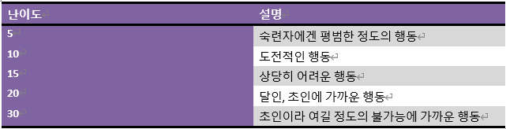

기본규칙
라이서스에서 판정은 기본적으로 d6를 클리셰 수만큼 굴려서 합니다. 그렇게 나온 결과를 TN(난이도)과 비교해서 그 이상일 경우 성공, 미만이면 실패입니다. 기본적으로 판정은 행동판정과 대결 이렇게 2가지 종류가 있습니다.
행동 판정
언제든 누구나 아무거나 할 수 있으나 아무나 평범하게 어려움 없이 할 수 있는 행동은 판정이 필요 없습니다. 만약에 실패할 가능성이 있는 행동일 경우 판정이 필요 합니다. 판정은 GM이 정한 난이도에 알맞은 클리셰의 점수를 적용한 뒤에 합니다. 해당 클리셰가 없다면 판정 불가/혹은 부적합 클리셰 규칙 등을 사용해야 합니다.
여기서 GM이 주의 해야 할 사항은 사용하는 클리셰에 따라서 난이도가 바뀔 수도 있다는점! ‘숙련된 저격수’ 클리셰를 가진 PC에게 멀리 있는 목표를 사격하는 것은 5~10 정도의 난이도겠지만 ‘평범한 경찰’ 클리셰를 가진 PC에게는 10~20 정도의 난이도가 됩니다. 이를 쉽게 하기 위해서 부적절한 클리셰 사용시 난이도를 +5 혹은 +10 정도 향상. 저격수의 장거리 사격의 난이도가 5라면 군인에게는 +5 해서 10, 경찰에게는 +10해서 15. 이렇게 판정의 난이도를 정할 때 사용하는 클리셰가 적절한 클리셰인지 부적절한 클리셰인지 따집니다.
대결
피 터지는 전투 뿐 아니라 외교관 사이의 외교전, 서로 다른 의견의 평론가들끼리의 격한 토론, 댄서들의 댄스배틀, 학생들의 장기자랑 경쟁 등등 둘 이상의 캐릭터들이 서로 경쟁한다면 그것을 대결이라고 합니다. 대결에서는 행동 판정과는 달리 정해진 난이도가 아닌 서로의 판정 결과를 비교해서 겨룹니다. 그렇게 해서 결과가 더 높은 사람이 이기고(비기면 재판정) 낮은 사람은 대결에 사용된 클리셰의 점수가 1점 감소됩니다. 한 번 서로의 결과를 겨루는 시간을 라운드라고 합니다. 대결은 수 차례의 라운드로 이루어지며 마지막에 어느 한 사람의 소유 클리셰 중 아무거나 하나의 점수가 0이 되면 그 사람이 패배하고 끝납니다.
대결의 승자는 패배자가 어떻게 될 지를 결정 합니다. 치열한 전장에서라면 죽였다고 표현할 수도 있고, 악랄한 논쟁 끝이라면 상대를 우스개거리로 만들 수도 있겠지만 중요한 점은 반드시 대결의 성향에 알맞은 결정을 묘사해야만 한다는 것입니다. 테니스 경기에서 이겼는데 갑자기 상대의 목을 댕겅 자르겠다고 묘사하면 말이 안되겠죠. 추가로 해당 결투에 알맞은 클리셰가 더 있다면 대결 중간에 다른 클리셰로 교체해서 사용하는 것도 가능 하지만 클리셰 중 하나가 0이 되면 지는 것은 똑같습니다.
대결이 끝난 다음엔 GM이 소모된 클리셰 점수를 상황에 알맞게 회복시켜 줍니다. 이종격투기 같은 격한 대결 뒤에는 낮은 점수만 회복 되는 것이 맞겠지만 간단한 말다툼 뒤에는 점수를 대부분 혹은 전부 회복 시켜 줘도 문제 없겠지요. 참고할 점은 라이서스에선 정해진 거리 개념과 시간 개념이 없습니다. 간단한 말다툼 대결은 10분 정도겠지만 정치적 주제에 대한 논쟁 대결은 3시간이 걸리겠죠. 모든 것은 상황에 맞게 GM이 정합니다.
부적합 클리셰
원칙대로라면 대결에 돌입하면 해당 대결에 “적합한 클리셰”를 사용해야만 합니다만 “부적합 클리셰”를 제미있게 방법이 있습니다. 이는 PL의 정말 정말 정말로 그럴싸한 발언과 묘사, 그리고 GM의 허락 하에 허용되는 특수 규칙으로, ‘부적합 클리셰’를 사용해서 라운드에서 이길 시 상대는 1점 대신에 3점이 깎입니다. 물론 자신은 져도 1점만 감소되지요. 그러니 창의적인 PL은 상당히 위험한 존재가 될 수 있습니다.
무엇이 적합하고 부적합한지는 대결의 종류로 따질 수 있는데, 전사와 마법사가 마법대결을 한다면 전사가 부적합 클리셰겠지만 격투대결이라면 마법사가 부적합 클리셰일 것입니다. 하지만 마법과 격투 등으로 나뉘지 않은 그저 싸움이라면 둘 다 적합한 클리셰입니다.
옮긴이의 노트: 즉 요리사(3)가 대마왕(4)을 무투전에서 반 죽이는 것이 가능하다는 뜻입니다. 이는 코미디 요소로 사용될 수도 있겠지만 데우스 엑스 마키나 같이 GM의 게임/이야기적 흐름의 반전을 위해서 사용 될 수도 있습니다.
한방 대결
한방 대결은 대결과 같이 둘 이상의 캐릭터가 서로 경쟁할 때 필요한 판정입니다만 다른 점이 있습니다. 간혹 구태여 대결에 들어가기엔 너무 간단하거나 혹은 시간적 여유가 되지 않을 때 단 한 번의 라운드로 대결의 승패를 결정하면 되는데, 그것이 바로 한방 대결 입니다.
팀 짜기
대결에 참가하는 캐릭터가 너무 많을 때에는 이를 간략화 판정을 쉽게 푸는 방법이 있는데 그것을 팀 짜기라고 합니다. 팀 짜기에서는 ‘아군’과 ‘적군’, 이렇게 두 파로 나누어 대결에서 했던 것 처럼 양측이 서로 판정을 대결해가며 클리셰를 소모시킵니다. 이렇게 하기 위해서 팀은 2가지 종류가 있는데 첫 번째는 '캐릭터 팀'이고 둘 째는 '잡졸무리'입니다.
잡졸무리
잡졸 무리는 클리셰 1점 이하의 단역들을 하나로 묶어서 개인 개체로 취급하는 단위입니다. 잡졸 무리의 클리셰의 점수는 잡졸 한 명의 클리셰 점수와 같거나, 대개는 더 높습니다. 죽음의 굴에서 뛰쳐나온 700마리의 해골 쥐들을 ‘700마리의 해골 쥐(7)’라고 객체화.
캐릭터 팀
캐릭터 팀은 PC던 NPC던 주연과 조연급 캐릭터들을 하나의 객체로 취급합니다. 캐릭터 팀은 PC나 네임드 NPC들을 하나의 개체로 취급하는 단위를 뜻합니다. 캐릭터 팀을 만들려면 먼저 팀의 리더를 정해야 하는데 팀의 리더는 해당 대결에 사용 될 클리셰의 점수가 가장 높은 캐릭터로 하고, 만약 서로 점수가 같을 시에는 합의로 정합니다. 캐릭터 팀의 판정은 리더가 하며, 해당 상황의 적합한 클리셰를 가진 팀원 한 명당 리더는 판정에 CD+1을 받습니다. 대결의 라운드에서 졌을 때는 리더의 클리셰가 1 감소되며 만일 팀원 중 한 명이 자원해서 피해를 입겠다고 할 시엔 2가 감소됩니다. 다만 팀원이 자원해서 피해를 입을 시 다음 라운드 판정에서 리더의 클리셰 점수가 2배가 됩니다. 이를 복수 보너스라고 부릅니다.
- 팀의 승패: 팀의 대결 중 팀원 한 명이 개별로 클리셰가 0이 되었을 시엔 곧바로 추방 당하는 대신에 팀의 대결 마지막까지 결과를 미룹니다. 후에 대결에서 이긴 팀이 진 팀의 결과를 결정합니다.
- 해체: 팀은 언제든지 해체가 가능하며 그럴 시 그 팀에 해당되는 모든 캐릭터의 클리셰 점수가 1씩 감소 됩니다. 팀을 해체한 캐릭터들은 다시 팀을 만들 수도 있습니다.
- 탈퇴: 팀에 속한 개인은 언제든지 팀에서 빠져나갈 수가 있지만 그 대가로 클리셰가 0이 됩니다. 탈퇴한 캐릭터의 후상황은 대결에서 이긴 팀이 결정합니다.
- 대장 손실: 팀의 리더가 탈퇴하거나 클리셰 점수가 0이 되었을 시엔 해당 팀은 자동으로 해체 됩니다. 곧장 바로 다른 리더를 세워서 팀을 결성할 수가 있고 만약에 전 리더가 복수의 보너스에 의하여 다운되었을 경우 다음 라운드에서 새 팀 리더가 복수의 보너스를 받습니다.
참가 불가자 티켓 주기
대결을 시작 하려거나 한방 대결을 하려는데 아무리 보고 생각해도 상황에 조금이라도 어울리는 클리셰가 없는 경우가 있습니다. 그런 경우 장면에 등장하는 모두에게 임시 클리셰 2개를 줘서 대결을 성립시킬 수가 있습니다.